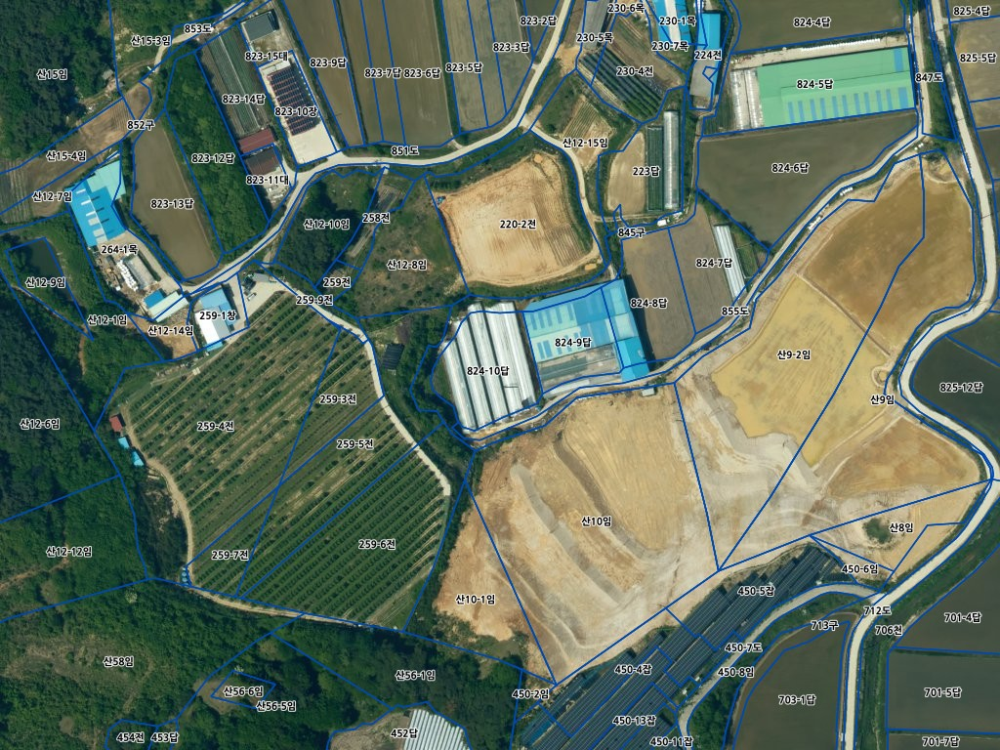

필지 카드에 이을 수 있는 것
서버가 실제로 받아 둔 값 두 필지 — 남원시 운봉읍 준향리 824-9(확인 기록 있음) · 운봉읍 서천리 125-3. 열쇠 값은 서버에만 있고 화면 · 기록에 없습니다.연속지적도 — 필지 속성V-World 데이터 · 서버가 이미 받는 길 · 30일 저장
| 받는 것 | 뜻 | 준향리 824-9 | 서천리 125-3 | 카드에 |
|---|---|---|---|---|
| 연속지적도에서 그대로 오는 값 | ||||
| addr | 주소 | 전북특별자치도 남원시 운봉읍 준향리 824-9 | … 운봉읍 서천리 125-3 | 보임 |
| jibun | 지번 + 지목 | 824-9답 | 125-3 대 | 지목으로 |
| bonbun · bubun | 본번 · 부번 | 824 · 9 | 125 · 3 | 안 보임 |
| jiga | 공시지가(원/㎡) | 15,600 | 52,800 | 보임 |
| gosi_year · month | 공시 연월 | 2025 · 01 | 2025 · 01 | 작게 |
| pnu | 필지 번호(19자리) | 5219025030108240009 | 5219025029101250003 | 작게 |
| 서버가 적재한 연속지적 도형에서 더 계산하는 값(같은 원천) | ||||
| 면적 | 도형 면적(㎡) | 1,652.9 | 550.0 | 보임 |
| 읍면 · 리 | 법정 읍면동 · 리 이름 | 운봉읍 · 준향리 | 운봉읍 · 서천리 | 보임 |
| 같은 자리의 다른 층(V-World 지역지구)에서 오는 값 | ||||
| uname | 용도지역 | 계획관리지역(2023년 고시) | 일반상업지역 | 보임 |
연속지적도에는 소유자 · 건물이 없습니다. 농업진흥 · 보호구역은 서버 적재 정본에 값이 있는 필지에만 보입니다(지금 화면의 '공개 자료' 줄과 같은 원천 · 준향리 824-9 는 해당 없음). 건물 층은 같은 자리에서 조회했지만 값이 오지 않아 넣지 않았습니다.
LX맵(편집지적도) — 지도 그림 층V-World 지도 층 · 서버 중계로 받음 · 30일 저장

운봉읍 준향리 824-9 둘레 — 실제로 받은 LX맵 한 장(위성 영상 위)- 무엇이 오나
- 지번 · 지목 글자와 필지 경계가 그려진 투명 그림 — 속성 값은 오지 않음
- 어떻게 쓰나
- 결과 지도의 '지도 층'에서 켜고 끔 · 필지를 누르면 그 자리 LX맵이 보임
- 연속지적도와 차이
- 연속지적도 = 필지마다 글자 값으로 카드에 적음 · LX맵 = 지도 위에 겹쳐 보는 그림
- 지금 서버
- 둘 다 서버가 이미 받는 길이 있음 — 새 열쇠 · 새 계약 없이 화면만 잇는 일